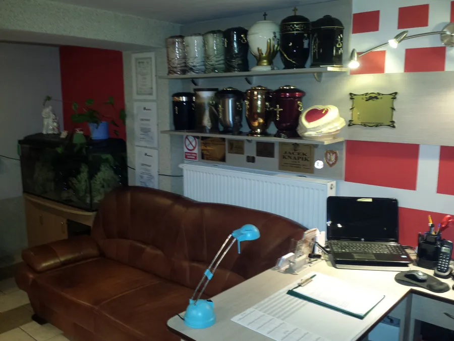
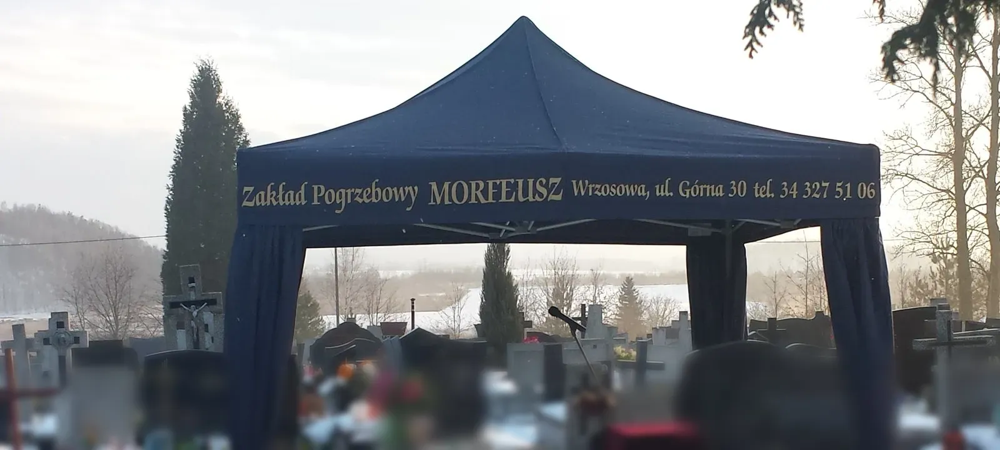
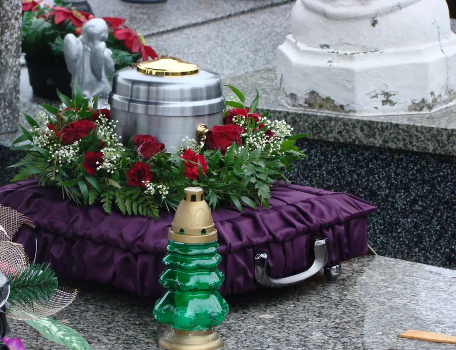
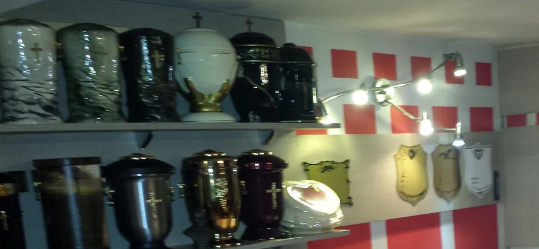
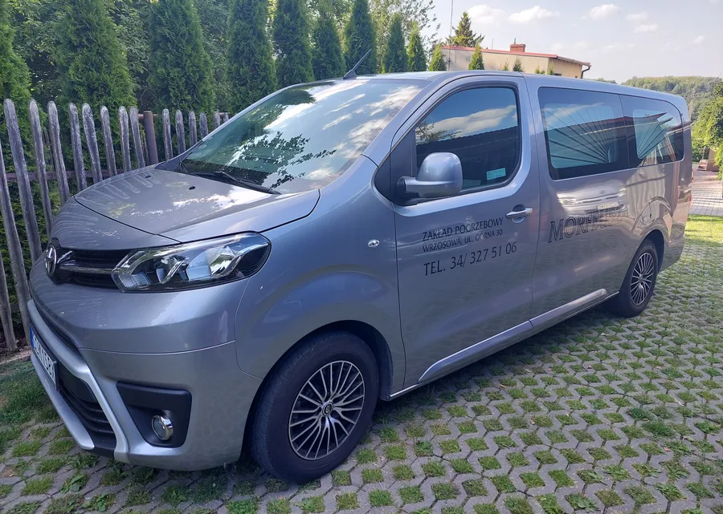
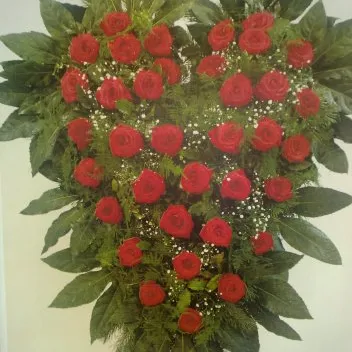
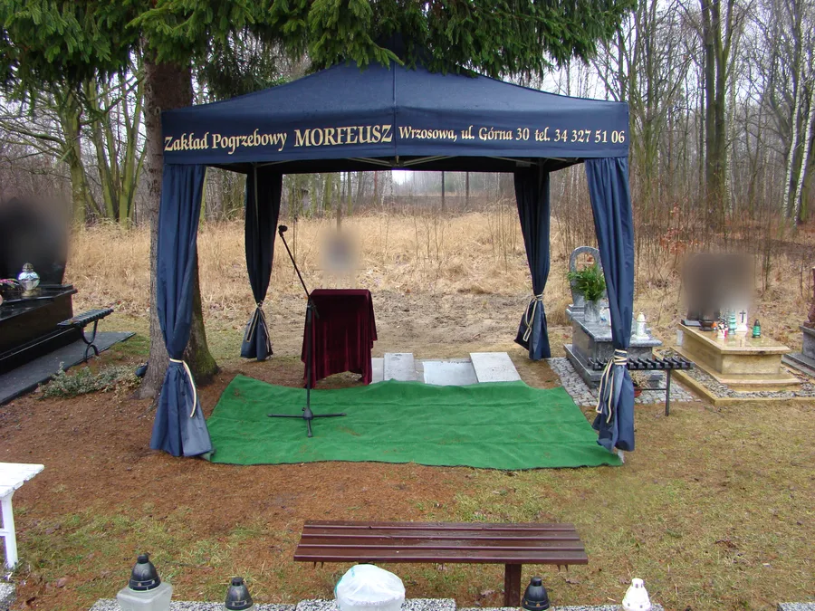
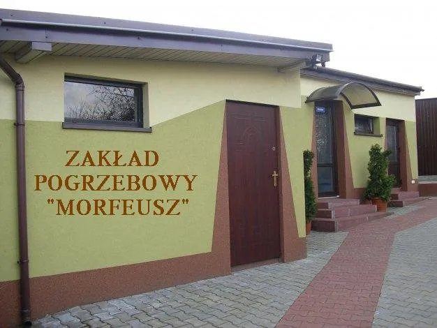
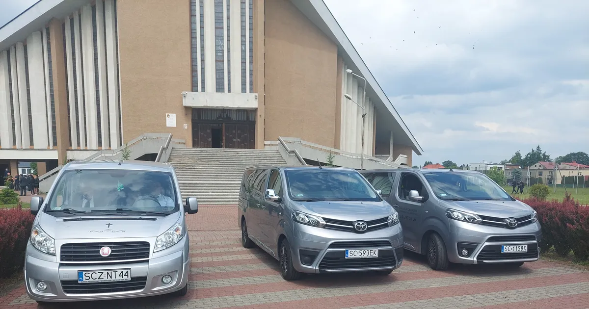

Organizacja pogrzebu i formalności
- Kompleksowa organizacja pogrzebu
- Bezgotówkowa organizacja pogrzebów
- Pomoc w formalnościach

Wrzosowa, ul. Górna 30 - okolice Częstochowy
Czynne całą dobę, także w święta
Kompleksowe usługi pogrzebowe. Pomożemy we wszystkich formalnościach, pogrzeb zorganizujemy także bezgotówkowo.
Telefon całodobowy 601 460 964Świadczymy kompleksowe usługi pogrzebowe - od pierwszego telefonu, przez formalności i transport, po oprawę ceremonii i pomnik.




Ubieranie i kosmetyka osób zmarłych - z szacunkiem, według życzeń rodziny.


Wykonujemy usługi grabarskie na cmentarzach.
Nie musisz wiedzieć wszystkiego od razu. Wystarczy jeden telefon - resztę przejdziemy razem, krok po kroku.
Zakład mieści się przy ul. Górnej 30 we Wrzosowej. Mamy własną chłodnię oraz własne karawany, którymi przewozimy zmarłych w kraju i za granicę.
Ceremonie obsługują stosownie ubrani, przeszkoleni pracownicy. Na cmentarzu rozstawiamy namiot z zasłonami, a na życzenie zapewniamy oprawę muzyczną, wieńce i wiązanki.


Zakład Pogrzebowy „Morfeusz”
ul. Górna 30
42-263 Wrzosowa
Zakład czynny całą dobę w dni powszednie i święta.
Wyznacz trasę